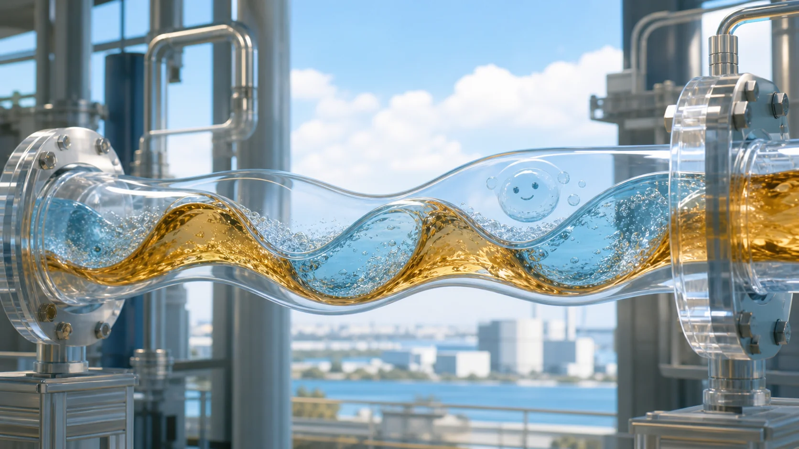
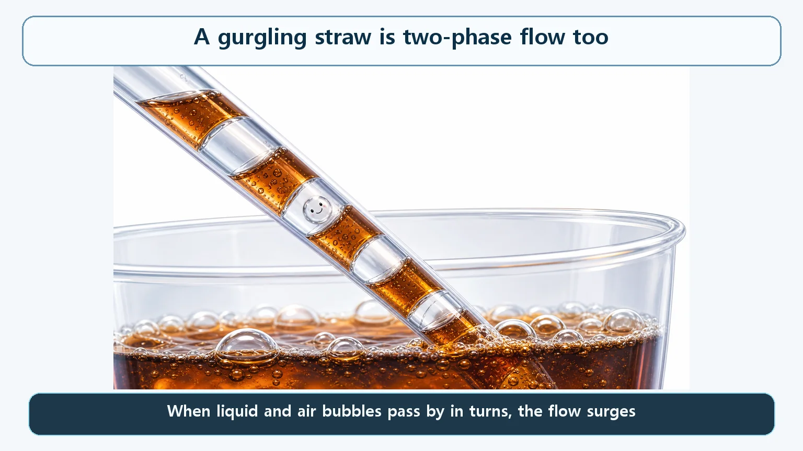
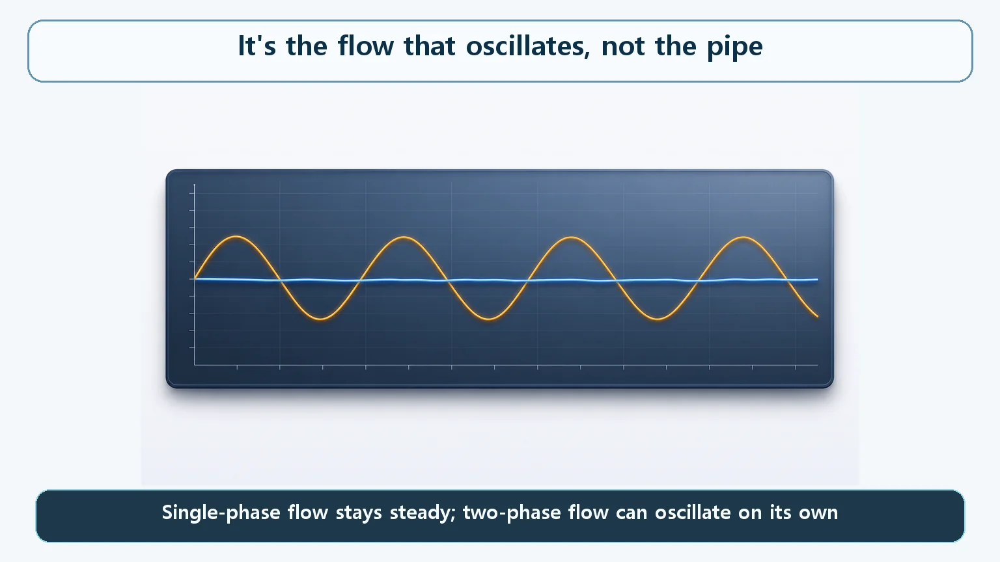

Heat Transfer & Thermal Hydraulics · 148
Why Your Straw Gurgles at the Bottom of the Cup — Thermal-Hydraulic Instability Made Simple
When two phases of very different density flow together, flow and pressure stop following a simple rule, and a delayed feedback loop can make the flow oscillate by itself.

Where water and steam flow together, the link between flow rate, pressure difference and void fraction stops being simple, and the flow itself can surge or oscillate with no outside push. It is a property of the flow, not a shaking pipe, and reactors and steam generators are designed with margin so that it stays out of the operating range.
The gurgle at the bottom of the cup
You've almost certainly heard this as you finish an iced drink. While there's plenty left, sipping through the straw brings the drink up smoothly and quietly. But once only a little is left and the end of the straw bobs above and below the surface, the flow stutters and surges with a gurgle, pulling up drink one moment and nothing but air the next. You're sucking just as hard as before, so why does the flow suddenly stop behaving?
That familiar sound hides a principle that also touches the way coolant flows in a nuclear power plant. Where boiling water and steam flow together, the flow itself isn't always smooth. This is thermal-hydraulic instability, and here we look at it just far enough to get a feel for it.

Calm with liquid alone, restless once air joins in
With the straw full of drink, the relationship is simple: suck steadily and the drink rises steadily. The trouble starts when drink and air come up together. Air is much lighter than the drink (its density is far lower), and its volume changes easily, so even a little air can make the volume and speed of the fluid in the straw jump around. The suction stays the same, but the flow turns erratic all by itself.
Reactor coolant can pass through a similar stretch. Where water boils into steam, the two flow together, and like drink and air they are two phases with very different densities. There, the simple rule "send this much flow and you get this much pressure difference" breaks down easily. One flow rate might correspond to several possible pressure differences, or in some ranges the pressure difference can even drop as the flow rises.
There's one more ingredient. When the flow rate changes, so does how much the fluid heats up and what fraction turns to steam (the void fraction). The void fraction affects the pressure difference, and the pressure difference affects the flow rate again, with a time lag. When a feedback loop includes a delay like this, the flow may fail to settle at one value and instead rise and fall on its own. That is the basic intuition behind the phenomenon.
One honest caveat: a straw gurgles because outside air gets drawn in, while in a sealed reactor coolant system the steam forms when the water itself boils. What the analogy captures is only the shared core idea: when two fluids of very different density flow together, the link between flow and pressure stops being simple.
It's not the pipe that shakes, it's the flow
Hearing "instability," many people imagine pipes rattling from an earthquake or a jolt. That is a different story. Here, "surging" means physical quantities such as flow rate, pressure and void fraction rise and fall on their own over time. When your straw gurgles, the straw isn't trembling; the amount of flow passing through it is what surges.

Where only water flows, the flow rate stays close to a flat line over time. Where two phases flow together and the feedback loop kicks in, the flow curve can rise and fall like waves, even though nobody changed the pump speed or touched a valve.
Two-phase flow doesn't always surge like this. Self-sustained oscillation can appear only when several conditions, such as flow rate, pressure and how strongly the fluid is heated, line up in particular ways. Exactly where that boundary lies takes sophisticated analysis, so we stop at the intuition of why mixing two phases can create this behavior.
So why does nuclear engineering care?
A coolant's ability to carry heat depends on how much is flowing at that moment. If the flow rate goes up and down, moments of good cooling and relatively poorer cooling can alternate, and when flow dips, the cooling margin can shrink. That is the qualitative concern.
So equipment where water and steam can flow together, such as reactors and steam generators, is designed from the start with ample margin so that this self-oscillation doesn't occur within the actual operating range, and that is checked. Observing thermal-hydraulic instability does not, in itself, mean an accident or core damage. It is a behavior managed so that it is avoided at the design and operating stages, not something going on all the time in a normally operating plant.
The one-line takeaways
- In a region where water and steam flow together, the links between flow rate, pressure difference and void fraction stop being simple, so the flow itself can surge or oscillate.
- Like a gurgling straw: two fluids of very different density mixing makes flow and pressure depart from a simple proportional relationship.
- The surging is a property of the flow, not mechanical vibration of the pipes.
- Because surging flow can make cooling capacity rise and fall, related equipment is designed and managed with margin so it doesn't appear in the operating range.
- Onset numbers and detailed mechanisms are specialist quantitative analysis; this is only the intuition.